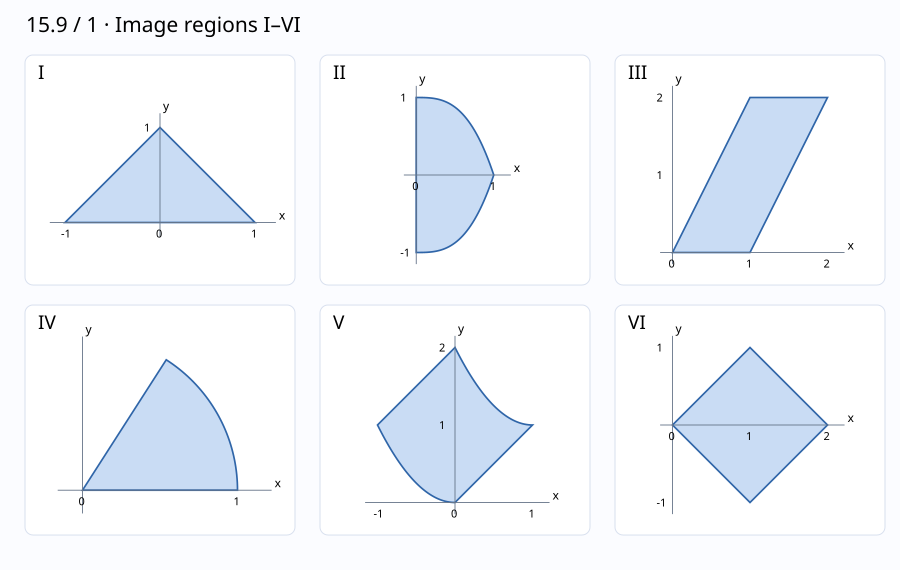

문제 요약
\(0\le u,v\le1\)인 정사각형의 상을 도해I–VI와 대응시키고 이유를 설명하라. \[\begin{aligned}(a)&\ (x,y)=(u+v,u-v)\\(b)&\ (x,y)=(u-v,uv)\\(c)&\ (x,y)=(u\cos v,u\sin v)\\(d)&\ (x,y)=(u-v,u+v^2)\\(e)&\ (x,y)=(u+v,2v)\\(f)&\ (x,y)=(uv,u^3-v^3)\end{aligned}\]
- a
- b
- c
- d
- e
- f

힌트. 네 경계변의 상을 구한 뒤 꼭짓점과 곡률을 확인한다.
해설.
(a) 정사각형 꼭짓점은 \((0,0),(1,1),(2,0),(1,-1)\)로 간다. 대각선이 좌표축에 평행한 마름모VI이다.
(b) u=0 또는 v=0인 변은 y=0, u=1은 y=1-x, v=1은 y=1+x로 간다. 경계는 삼각형I이다.
(c) u는 반지름, v는 각도이다. 0≤r≤1,0≤θ≤1 rad인 부채꼴IV이다.
(d) u=0은 y=x², v=0은 y=x, u=1은 y=1+(1-x)², v=1은 y=x+2이다. 곡선 사각형V이다.
(e) 꼭짓점은 \((0,0),(1,0),(2,2),(1,2)\)이다. 평행사변형III이다.
(f) u=1은 y=1-x³, v=1은 y=x³-1이며 나머지 변은 x=0에 놓인다. 0≤x≤1인 곡선영역II이다.
최종 답. (a) VI, (b) I, (c) IV, (d) V, (e) III, (f) II.
검산·주의점. 각 변환의 경계 네 개를 직접 매개화하여 모든 도해의 선분·곡선과 대응시켰다.
Problem summary
Match the image of \(0\le u,v\le1\) under each map to diagramI–VI, explaining the choice. \[\begin{aligned}(a)&\ (x,y)=(u+v,u-v)\\(b)&\ (x,y)=(u-v,uv)\\(c)&\ (x,y)=(u\cos v,u\sin v)\\(d)&\ (x,y)=(u-v,u+v^2)\\(e)&\ (x,y)=(u+v,2v)\\(f)&\ (x,y)=(uv,u^3-v^3)\end{aligned}\]
- a
- b
- c
- d
- e
- f
Hint. Map the four boundary edges, then check vertices and curvature.
Solution.
(a) The corners map to \((0,0),(1,1),(2,0),(1,-1)\), giving diamondVI.
(b) The edges u=0 or v=0 map to y=0; u=1 gives y=1-x and v=1 gives y=1+x. This is triangleI.
(c) Here u is radius and v is angle:0≤r≤1,0≤θ≤1 rad, the sectorIV.
(d) The four edges become y=x²,y=x,y=1+(1-x)²,y=x+2, giving curved quadrilateralV.
(e) The corners become \((0,0),(1,0),(2,2),(1,2)\), giving parallelogramIII.
(f) The edges u=1 and v=1 give y=1-x³ and y=x³-1; the other edges lie on x=0. This is curved regionII, with0≤x≤1.
Final answer. (a) VI, (b) I, (c) IV, (d) V, (e) III, (f) II.
Check and conditions. Direct parametrization of all four edges verifies the segments and curves in each diagram.